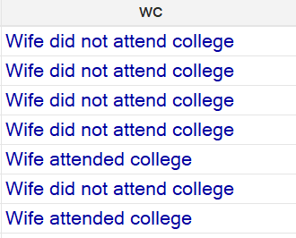
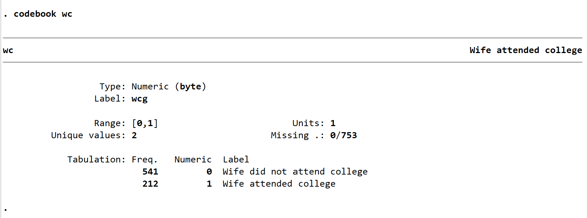

STATA Beginner's Tutorial: Descriptive Statistics
Intro & Key Concepts
In this session, we will show you how to do explanatory data analysis (EDA) using descriptive statistics in STATA. The main goal here is to find insights about your data using different methods of EDA. In other words, we want to look at our data from every possible angle to understand it well before doing statistical inference. All the famous econometrics works you can find around the globe have a good and in-depth EDA sections.
Descriptive statistics help us summarize and understand our data. We use them to:
- Calculate averages and typical values (mean, median)
- Measure how spread out the data is (standard deviation)
- Find the smallest and largest values (min, max)
- Count how many cases fall into each category (frequencies)
This helps us check for errors, understand patterns, and generate hypotheses before moving to more advanced analysis.
Learning Goals
In this session, we will:
- Learn how to explore a dataset using descriptive statistics and graphs
- Understand how to clean and prepare data for analysis
- Create new variables and visualize relationships
- Practice interpreting numerical and graphical outputs
- Run simple linear regressions with and without control variables
1. Getting Started
As always, we start from a clean slate to avoid conflicts with previous datasets.
clear all
This command removes any dataset or variable currently stored in memory.
Opening a Log File
To keep a record of what you do in Stata (commands and results), always start a log file:
log using "log_stata_session2.log", replace
replaceensures that if a file with the same name exists, it will be overwritten- You can later open this
.logfile in any text editor or Word
2. Setting Your Working Directory
Before loading any data, Stata needs to know where your files are stored. By setting the directory at the start, you don't need to use full paths for all your do-files and folders. You simply put the directory path first, and then use this pre-set directory to navigate other files throughout your project. These steps become more important as you start working on real projects with lots of coding.
You can set the working directory in two ways:
Option 1 (Menu):
Go to File → Change working directory, then select the folder where your datasets and files are stored.
Option 2 (Command):
cd "\Path"
3. Loading the Dataset
The dataset for today's exercise is Mroz.dta. It contains information on married women, including their age, education, family income, labor force participation, and wages.
If you have installed the causaldata package:
ssc install causaldata
use causaldata mroz, clear
save "Mroz.dta", replace
Otherwise, download it manually from Nick Huntington-Klein's GitHub or your Moodle page, save it in your working directory, and open it with:
use "Mroz.dta", clear
4. Getting to Know Your Data
Let's look at what's inside the dataset.
describe
This command lists all variables, their storage type, labels, and number of observations.
You should recognize variables such as:
- lfp: labor force participation (1 if working, 0 otherwise)
- age: woman's age
- wc: college education dummy (1 if college graduate)
- lwg: log of wage
- inc: family income
- k5, k618: number of children under 5 and aged 6–18
Now let's get more detailed information:
codebook
Some variables in Stata have string values, but when you used “describe” command, the storage type of the variable might appear as a byte
This happens because the variable is numeric, but has value labels.
In order to know the numeric value, you need to check the codebook of that variable.
For example, here from session 2 we have the variable wc with label “Wife’s college attendence” , the values shown in the data editor were “Wife did not attend college” and “Wife attended college”

However, when you check the codebook, you will see the numeric values. Here for wc we
wc = 0 → “Wife did not attend college”
wc = 1 → “Wife attended college”
You need to know this numeric values if you want to clean or transform the data, or when using logical conditions

💡 Always check variable labels carefully. this helps avoid confusion later.
5. Understanding Variable Types
In econometrics, we work with different types of variables:
- Continuous variables (like
age,inc,lwg): Can take on many numeric values - Categorical/Binary variables (like
lfp,wc): Take on limited values, usually categories or yes/no
We use different commands for different variable types, as you'll see in the next sections.
6. Checking for Missing Values
Real data often has missing values, which Stata marks with a dot (.). Let's check if our dataset has any missing values:
misstable summarize
Alternatively, you can use:
summarize, detail
Look for variables with very low counts; this might indicate missing data. When we use keep if or drop if commands later, Stata will automatically exclude observations with missing values in those variables.
7. Creating a Working Copy
Before we start cleaning and modifying the data, let's preserve the original dataset by creating a working copy:
save "Mroz_working.dta", replace
Now all our changes will be saved to this working file, keeping the original data safe.
8. Summary Statistics
Let's explore our variables using summary statistics.
For continuous variables (like age, income):
summarize age
This gives you: - Mean: the average age - Std. Dev.: how spread out ages are - Min/Max: the youngest and oldest women in the sample
For more detailed information:
summarize age, detail
This adds the median (middle value), percentiles, and information about the distribution. The median is often better than the mean when data has extreme values.
For categorical variables (like labor force participation):
tabulate lfp
This displays the number and percentage of women who work (lfp = 1) and those who don't (lfp = 0).
💡 The tabulate command is essential for exploring categorical variables (binary or discrete).
9. Creating New Variables
The dataset has two variables for children:
- k5: children under age 5
- k618: children aged 6 to 18
Let's combine them into one total count:
gen n_children = k5 + k618
Now let's look at the distribution:
tabulate n_children
This shows us how many families have 0, 1, 2, etc. children, which is more informative than just the average.
10. Labeling Variables
To make your dataset readable and presentable:
label var n_children "Total number of children"
Good labeling helps you and others understand what each variable represents.
⚠️ Reminder: In Stata, there are two kinds of labels:
Variable labels — describe what the variable means Example: age → “Respondent’s age”
Value labels — describe what each numeric value represents within a variable Example: 1 = Yes, 0 = No
For more details on STATA variable types, see the Annex: STATA Variable Types at the end of this document.
11. Basic Visualizations
Graphs help us see patterns that numbers alone might miss.
For distributions of continuous variables:
histogram wage, frequency
This shows the shape of the wage distribution , is it normal? Skewed?
For comparing groups (categorical vs continuous):
graph box wage, over(wc)
This boxplot shows how wages compare between college graduates (wc = 1) and non-graduates (wc = 0). It displays the median, spread, and any unusual values.
For relationships between two continuous variables:
scatter inc wage
This creates a scatterplot, where each point is one woman. Look for the overall pattern: "do higher-income families correspond to higher wages?"
12. Data Cleaning
Now let's focus our analysis on working women:
keep if lfp == 1
After this command, your dataset will only contain women who are working (lfp = 1).
Check your data for unrealistic values:
summarize
If you notice negative family income, that's not reasonable, so we remove those observations:
drop if inc < 0
⚠️ Always double-check before dropping data! You can inspect outliers with:
list inc if inc < 0
13. Wages and Education
Let's explore how education relates to earnings.
The variable wc indicates whether a woman has a college education (1 = yes, 0 = no).
The variable lwg represents the log of the wage.
Let's compare average log-wages across education levels:
summarize lwg if wc == 0
summarize lwg if wc == 1
Or use one command to summarize both groups together:
table wc, stat(freq) stat(mean lwg)
💡 Remember: "log-wage" is in logarithmic scale. The difference in log-wages can be interpreted as a percentage difference in average wages.
14. From Log-Wage to Actual Wage
We can convert log-wages back into real wages using the exponential function:
gen wage = exp(lwg)
Now repeat the comparison:
summarize wage if wc == 0
summarize wage if wc == 1
table wc, stat(freq) stat(mean wage)
This gives the average wage in actual monetary units, making the results easier to interpret.
15. Log Transformations
Sometimes variables like income and wages are very skewed.
To make relationships more linear and interpretable, we log-transform income:
gen linc = log(inc)
Then plot the relationship again:
scatter linc lwg
You should now see a clearer linear relationship.
16. Exporting Graphs
To save a graph that's currently open:
graph export "ex1_graph1.png", replace
This saves it in your working directory as a .png image.
17. Conditional Means: Binning by Income
Let's group income into 10 categories and compute average wage within each group:
egen inc_cat = cut(inc), group(10) label
table inc_cat, stat(mean wage)
You now have a simple nonparametric summary , the mean wage for each income decile.
18. Smoothed Relationships (LOESS)
To visualize a smooth curve that shows the average trend:
lowess linc lwg
This nonparametric regression (LOESS) fits a smooth line through the scatterplot.
19. Combine Graphs
We can combine: - A scatterplot (raw data), - A linear regression fit, and - A LOESS smooth curve:
twoway lfit linc lwg || lowess linc lwg || scatter linc lwg
graph export "ex1_graph2.png", replace
This gives a full picture: - Blue line: linear fit - Red line: LOESS smooth - Dots: observed data points
20. Labeling Categories
To make your income categories readable:
label var inc_cat "Income category"
label define inc_cat_lb 0 "less 9k" 1 "between 9k and 10.95k" 2 "between 10.95k and 13.3k" 3 "between 13.3k and 14.9k" 4 "between 14.9k and 17.09k" 5 "between 17.09k and 18.56k" 6 "between 18.56k and 21.16k" 7 "between 21.16k and 25.2k" 8 "between 25.2k and 31.8k" 9 "more 31.8k", replace
label values inc_cat inc_cat_lb
21. Simple Linear Regression
Now let's model the relationship between log-wage and log-income:
reg lwg linc
The output tells you:
- The estimated coefficient on linc: interpreted as elasticity (a 1% increase in income → β% increase in wage)
- R-squared: how much variation in wages is explained by income alone
- _cons: the constant term (predicted wage when income is zero)
💡 Important: An elasticity tells us the percentage change in one variable (wage) given a 1% change in another variable (income).
22. Adding Control Variables
To make your regression more realistic, add controls for:
- Age and its squared term (to capture nonlinear effects)
- Education (wc)
- Number of children (n_children)
reg lwg linc c.age##c.age wc n_children
Interpretation:
- The sign and size of linc show the partial relationship between income and wage, holding other factors constant
- The age and age² terms capture how wages vary across the life cycle
- wc shows how college education affects wages
⚠️ Correlation is not Causation! This regression shows a relationship between income and wage, but it does not prove that higher income causes higher wages. There could be omitted variables (like ability, experience, or industry) that influence both. We add control variables to try and account for this, but we must always be cautious in our interpretation.
23. Saving Your Work
Once finished, save your dataset with all new variables and cleaned data:
save "Mroz_session2.dta", replace
log close
Congratulations! You've completed a comprehensive exploratory data analysis and are ready for more advanced econometric techniques.
Annex: STATA Variable Types
This annex provides a quick reference for STATA variable types. It summarizes the storage types, capacities, and examples of variables you may encounter in datasets. Use this table when creating, importing, or inspecting variables to ensure correct data handling.
| Type | Storage Size | Meaning / Capacity | Example Variable | Example Value |
|---|---|---|---|---|
| Numeric | ||||
| byte | 1 byte | Whole numbers from -127 to 100 | age_group | 5 |
| int | 2 bytes | Whole numbers from -32,767 to 32,740 | year | 1999 |
| long | 4 bytes | Whole numbers up to ±2 billion | population | 1,250,000 |
| float | 4 bytes | Decimal numbers (≈7 digits precision) | income | 15,342.56 |
| double | 8 bytes | Decimal numbers (≈16 digits precision) | gdp | 52,345.6789012 |
| String | ||||
| str1 | 1 byte | Text up to 1 character | gender | "M" |
| str2 | 2 bytes | Text up to 2 characters | code | "AB" |
| str3 | 3 bytes | Text up to 3 characters | abbr | "USA" |
| str# | # bytes | Text up to # characters (e.g., str10 = 10 chars) |
name | "Michael" |
| str2045 | 2045 bytes | Text up to 2045 characters | comment | "This is a very long text..." |
| strL | Variable | Text up to ~2 billion characters | notes | "Detailed report on the observation..." |
💡 Note: Selecting the correct variable type ensures efficient memory usage and prevents rounding or truncation errors in STATA.